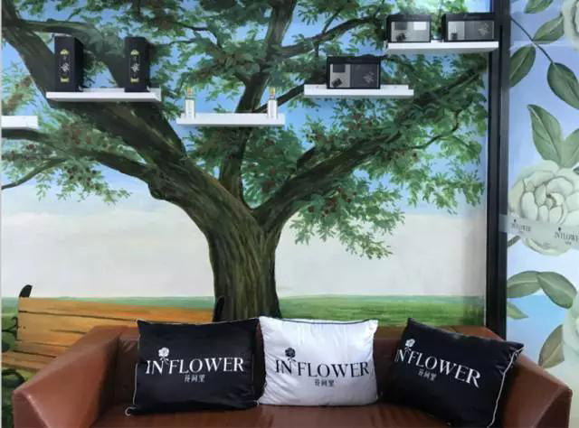
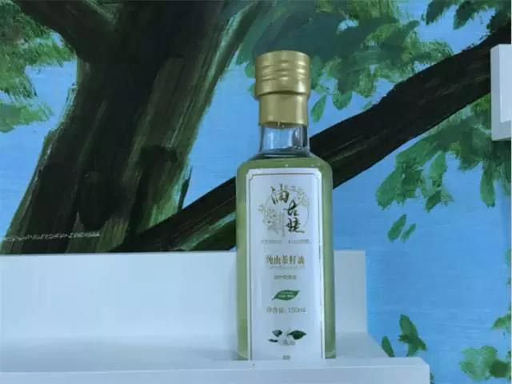
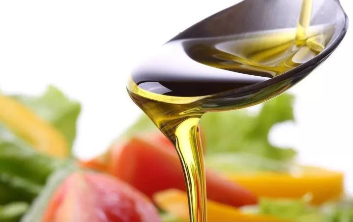
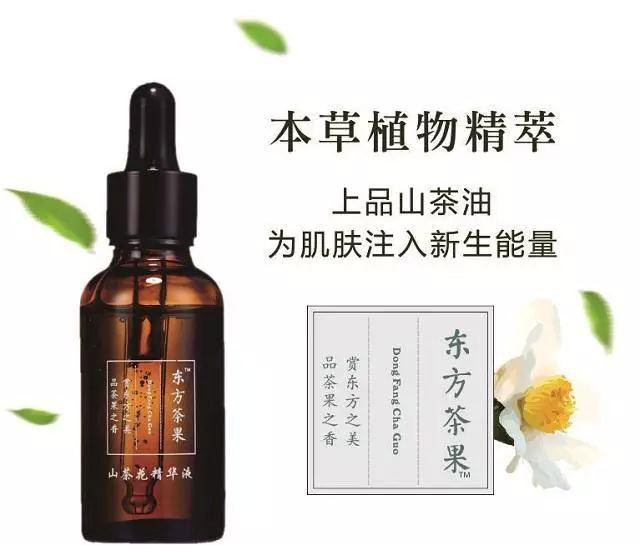

｜设计｜空间｜美学｜原创｜
中国美，遇见有品位的美学生活家。

山茶油的原产地在我国，山茶，是我国最古老的木本植物之一。作为我国特有的食用植物油，山茶油生产和发展的历史源远流长。据《山海经》记载，我国栽培山茶已有2300多年的历史。史册上关于山茶油的历史数不胜数，朱元璋将山茶油封为“御膳用油”，《天工开物》中宋应星赞其“油味甚美”，唐代著名诗人李商隐食用后，曾为山茶油赋“芳香滋补味津津，一瓯冲出安昌春”的诗句……
山茶油，在我国历来属于膳食珍品，旧时享用山茶油可谓是一种身份的象征。然而，令人惋惜的是，由于种种原因，山茶油却长期以来"藏在深闺人未识"。

东方橄榄油 纯天然绿色食用油
其实经科学鉴定，山茶油的油酸及亚油酸含量均高于橄榄油，是一种营养价值极高的纯天然绿色食用油。山茶油营养丰富，色清味纯，所含单不饱和脂肪酸的成分为天然植物油之冠，人体的消化率达97%，长期食用能有效地降低血液中的胆固醇、降血脂、降血压、对心脑血管疾病等有辅助治疗作用。
山茶油还富含维生素E和钙、铁、锌等微量元素，被医学家和营养学家誉为"生命之花"的锌元素。此外，山茶油中含有生物活性物质，如山茶甙、山茶皂甙、茶多酚等。由于它的脂肪酸组成可与地中海地区橄榄油相媲美，加之碘价低，油脂稳定性强，不易氧化等特点，所以素有“东方橄榄油”的美称，被世界众多营养专家一致推崇。

人体美丽密码
山茶油除了营养食用功效外，在美容护肤方面也有奇效。经专家研究，山茶油中不饱和脂肪酸含量高达93%，不饱和脂肪酸又叫美容酸，长期使用茶油类护肤品能使人的皮肤光滑、润泽。还用于护发，可防头发断裂和脱发。相传慈禧太后和珍妃都爱用茶籽油来护理肌肤，在现代也有许多爱美人士喜爱用茶油系列天然化妆品。

山茶油，在护肤、药用、食用方面都有着不俗的效果，可谓是营养价值极高。明昌生态就一直专注于油茶经济林种植及山茶油系列产品开发，开发了多个知名品牌，尤其是“油古姥”品牌山茶油，保留了茶油的天然营养活性物质角鲨烯、维生素E和植物淳等，与市面上的高温精炼茶油比，角鲨烯含量100倍以上，深受人们喜爱，“油古姥”山茶油——这是一款真正有生命的油！
明昌生态秉承“专业、专注、专心、创新、分享”的经营理念，希望能将中国特有的超高品质山茶油带向全世界，成为中国高端油料产业的一张国际名片。